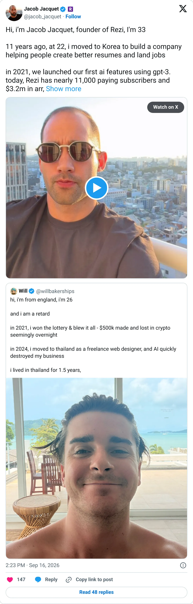

Real, don't clone
Rezi
AI resumes, eleven years in, $252k MRR. Entrenched.
$251,967 MRR
Should you build this
Rezi is an AI resume builder that started eleven years ago, long before the chatbot wave. TrustMRR reads $251,967 MRR. A founder tweet said $3.2M ARR, about six percent above twelve times the MRR. Ordinary rounding, old product, deep habit. You will not out-resume them with a wrapper.
Cited from the captured posts, shown below: the key post (Sep 16, 2026) is the source for “Nearly 11,000 paying subs, $3.2M ARR”.
Posts this is based on

Nearly 11,000 paying subs, $3.2M ARR
Open on X
What the product is
AI resume builder and ATS optimizer. Started 11 years ago in Korea and added GPT-3 features in 2021.
⚠ Thin X timeline: two recent data points, but backed by TrustMRR verification.